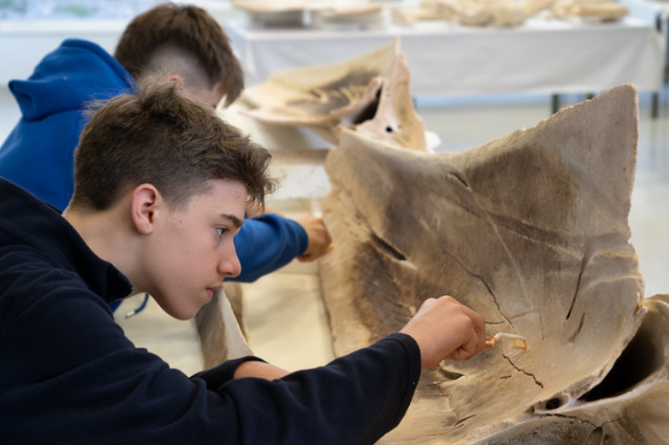
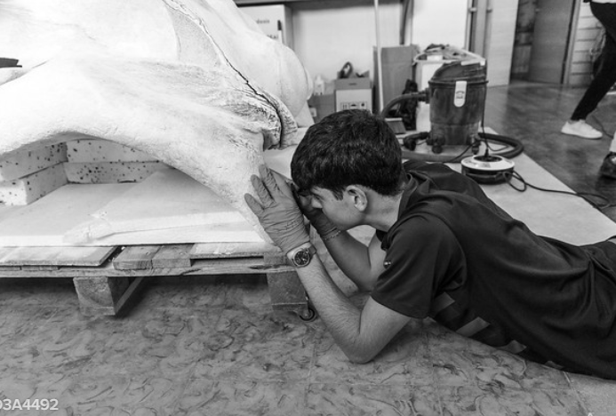
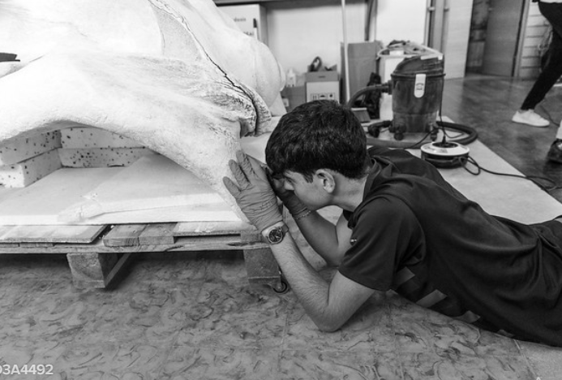
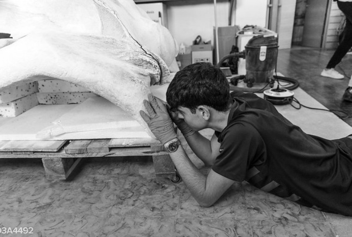

EL MUNTATGE DE LA BALENA
El projecte de l’Institut Joan Ramis i Ramis ha implicat la neteja, consolidació i muntatge dels ossos amb tècniques avançades i escaneig 3D per garantir-ne la conservació. Ara, aquesta impressionant estructura serveix com a testimoni del patrimoni natural i cultural de Menorca.

 


